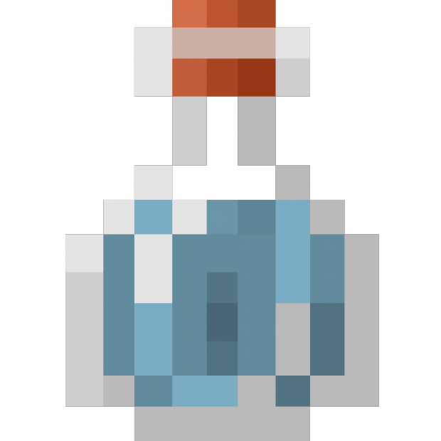
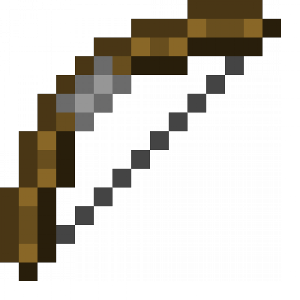

Self-Healing Materials Which Can Repair Itself, Inspired by the Human Body
Biology
Cement is the number one source of carbon emissions from decomposition of carbonates, and it accounts for 8% of the total global CO2 emissions. According to the Portland Cement Association (n.d), cement manufacturing produces 0.41 kilograms of CO2 for every 0.45 kg of cement.
Chemistry
Quicklime, also known as calcium oxide, is made by heating crushed limestone to 1,100~ degrees Celsius, releasing carbon dioxide (CaCO3 —> CaO + CO2). The self-healing properties of quicklime were tested by Admir Masic
Physics
In the 2000 year existence of Roman infrastructure, its buildings have passed the test of time and natural disasters. Many major earthquakes have happened in the past 2000 years, yet the Roman infrastructure is still intact- how much more can it take?
Biology
The most commonly manufactured cement today is a process patented by bricklayer Joseph Aspdin of Leeds in the 19th century. Global carbon emissions by cement manufacturing (especially Portland cement) in 2018 were estimated to have been 1.50±0.12 Gt CO2. The cement industry has produced 30-fold the amount since the 1950s and 4-fold since the 1990s, becoming the third largest source of anthropogenic emissions of carbon dioxide (third to fossil fuels and land-use changes).
Cement is the number one source of carbon emissions from decomposition of carbonates, and it accounts for 8% of the total global CO2 emissions (Andrews, 2019). According to the Portland Cement Association (n.d), cement manufacturing produces 0.41 kilograms of CO2 for every 0.45 kg of cement. Even with cement only being fractional of concrete, the manufacturing process of 1769 kilograms of concrete yields 181.4 kilograms of cement. In 2022, 4.1 billion metric tons of cement were produced.
The discovery of the secrets to Ancient Rome’s cement could lead to a massive reduction of the cement industry’s carbon emissions. Cement is one of the most widely used materials in the world, more than coal and iron. The destruction of concrete infrastructures from poor construction to natural disasters leads to the requirement to reconstruct, which in turn increases the demand for concrete. The self-healing properties of Roman concrete allows for the increased longevity of concrete and infrastructure. This consequently corresponds to the reduced use for concrete, hence, also reducing the cement manufacturing emissions.
The concept of self-healing is evident in the medicinal services and biological mechanisms of the human body. The self-healing cement (SHC) is made to imitate the human body’s capability to locate or detect and repair injuries within the concrete. It is meant to repair itself autonomously or autogenously, which are different mechanisms but essentially require the secretion of a substance material (in this case, water) in order to disperse and recrystallize the calcium deposits around the cracks - all without the need for external intervention (Amran etal., 2022). These self-healing processes can be monitored in three ways: recovery of strength performance, microstructural evaluations, and improvement of durability performance. There are several influential factors in the self-healing process. These can be characterized by the following: moisture content, crack width, hydration time, crack pressure, and water-to-cement ratio. Along with chemical compounded capsules being integrated into the composition of cement, the use of microorganisms (bacteria) such as Bacillus cohnii, Lysinibacillus sphaericus, B. pseudomycoides, etc. are also additives placed into microcapsules filled with bacteria spores.
Chemistry
Quicklime, also known as calcium oxide, is made by heating crushed limestone to 1,100~ degrees Celsius, releasing carbon dioxide (CaCO3 —> CaO + CO2). The self-healing properties of quicklime were tested by Admir Masic, a chemist at the Massachusetts Institute of Technology, and his colleagues when they gathered samples from an ancient wall in Privernum (a 2,000-year-old building near Rome) and experimented on it in their laboratories. Their experiments consisted of cracking small bursts in the concrete, and then simulating rainwater by adding water to the concrete. The lumps started dissolving and recrystallizing, filling the cracks and keeping the concrete sturdy (Science.org, 2023). The experiment also proved the effectiveness of the quicklime-Rome cement as it showed that it healed up cracks up to 0.6 millimeters, compared to today’s cement: 0.2 - 0.3 millimeters (Science.org, 2023).
However, there is still one problem. Upon closer observation of the Roman cement, the distinct millimeter-scale white mineral can be seen in chunks that have been part of Roman infrastructure. How could this form? Using the traditional method of mixing calcium oxide (CaO) with water, also known as slaking, wouldn’t explain the so-called time clasts (ArsTechnica, 2023). Masic’s team used high-resolution multiscale imaging and determined that these lime clasts were various forms of calcium carbonate heated up in extreme temperatures, quickly forming calcium oxide and carbon dioxide, and produced compounds that have high-temperature characteristics in a process called “hot-mixing” (EurekAlert, 2023):
Using the process of mixing with extremely high temperatures significantly reduces curing and setting times, effectively accelerating construction periods.
The significance of hot-mixing and the use of quicklime goes on a molecular level. By using hot-mixing insteads of traditional slaking, the lime clasts develop a brittle nanoparticle architecture that creates an easily fractured, reactive source of calcium (SpecifyConcrete, 2023). The structure becomes significant when the lime clasts are damaged; crystalline mineral deposits fill the cracks. To understand, let’s explore the general formation of cement.
Concrete has a relatively low tensile strength, meaning tiny cracks occur frequently. As concrete is exposed to different environmental conditions, rainwater can possibly enter the holes. As small cracks form in the concrete, the production of lime clasts ( the brittle nanoparticle architecture) traverses through high-surface-area life class, reacting with the rainwater, reacting a calcium-saturated solution that recrystallizes as calcium carbonate, quickly filling the crack. These reactions happen before damage spreads, giving the name “self-healing” for spontaneous/automatic healing (MIT, 2023).
Physics
In the 2000 year existence of Roman infrastructure, its buildings have passed the test of time and natural disasters. Many major earthquakes have happened in the past 2000 years, yet the Roman infrastructure is still intact- how much more can it take? One key factor that we can use to measure an object's resistance to the forces of wind/earthquakes/other environmental factors is tensile strength.
Tensile strength is an important factor used in engineering; it's the resistance of an object to withstand forces due to tension or stretching (CorrosionPedia, 2023). In the construction industry, it's critical in ensuring the building's endurance to wind, earthquakes, and other natural disasters. The average tensile strength of structural steel is 400-500MPa, and the average tensile strength of concrete is 2-5MPa (DesignBuildings,2022).
According to EngineeringRome (2013), original ancient Roman hydraulic concrete (from the 1st century) had a tensile strength of 7.9979MPa.